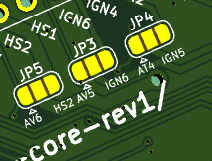
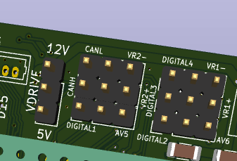

Terakhir diperbarui: 18 Juli 2026
Mazduino Core Rev1¶
Gambaran Umum¶
Mazduino Core Rev1 adalah revisi lanjutan dari Mazduino Core Rev0, ECU berbasis konektor otomotif 48-pin dengan arsitektur I/O yang lebih lengkap dari lini Mini 6CH. Produk ini menggunakan STM32F427 sebagai MCU utama untuk kebutuhan kontrol mesin advanced, termasuk dukungan dual ETB, dual CAN bus, kombinasi input Hall + VR, serta output aktuator yang lebih banyak untuk mesin modern.
Rev1 membawa sejumlah perbaikan dibanding Rev0, di antaranya penambahan 12V Out untuk suplai sensor (pin 17, misalnya untuk CKP/CMP sensor yang membutuhkan power 12V), perbaikan 5V sensor supply yang kini sanggup hingga 3A dan tidak mudah panas, penamaan jalur jumper opsional (CON21, CON22, CON37, CON38), serta penambahan opsi jumper baru pada pin 21 dan pin 37. Lihat bagian Perubahan pada Rev1 untuk ringkasan lengkap.
Dokumentasi ini disusun berdasarkan spesifikasi produk Mazduino Core dan referensi hardware pada dokumen MAZDUINO CORE.

Fitur Utama¶
- MCU STM32F427 ARM Cortex-M4
- Built-in 5V sensor supply hingga 3A dengan proteksi internal, lebih tahan panas dibanding Rev0
- Built-in 12V sensor supply (pin 17) untuk sensor yang membutuhkan power 12V, misalnya sensor CKP/CMP tipe 12V
- 4x input Hall/Digital untuk CKP, CMP, VSS, clutch, launch, atau switch lainnya (seluruhnya memiliki opsi jumper alternatif)
- 11x input analog untuk MAP, TPS, O2, tekanan, temperatur, PPS, dan sensor tambahan
- 6x output ignition (untuk smart coil, 5V/12V sesuai konfigurasi)
- 10x output low side 3A untuk injektor, idle PWM, boost, VVT, dan aktuator beban menengah
- 5x output low side low current untuk relay (main relay, fuel pump, fan, AC, tach)
-
2x output high side 1.3A untuk beban 12V switching
- Contoh penggunaan: alternator control, solenoid 12V, dan aktuator switching lain sesuai batas arus.
-
2x CAN bus (tergantung konfigurasi jalur/jumper)
- 2x input VR untuk CKP/CMP tipe variable reluctor
- 2x ETB output (ETB1 dan ETB2)
- Dual IC ETB (ETB1 dan ETB2) dapat juga digunakan untuk kontrol Idle Stepper
- Komunikasi USB, Serial, dan CAN
- Dukungan firmware rusEFI based saja (official atau custom firmware dengan MCU F4)
Perubahan pada Rev1¶
Dibanding Rev0, perbaikan/perubahan pada Rev1 adalah sebagai berikut:
| Pin | Rev0 | Rev1 | Keterangan |
|---|---|---|---|
| 4 (JP3) | AVS2 (Analog Volt 5) atau Ignition 6 | AVS5 (Analog Volt 5) atau Ignition 6 | Penamaan opsi jumper diperbarui, sinyal tetap Analog Volt 5 |
| 5 (JP5) | AVS3 (Analog Volt 6) atau High Side 2 | AVS6 (Analog Volt 6) atau High Side 2 | Penamaan opsi jumper diperbarui, sinyal tetap Analog Volt 6 |
| 6 | 5V Sensor Supply | 5V Sensor Supply (hingga 3A) | Kapasitas arus suplai 5V diperbesar, lebih tahan panas dibanding Rev0 |
| 17 | Ground (Ground power) | 12V Out (Sensor 12V power) | Pin baru untuk suplai 12V sensor, misalnya CKP/CMP sensor tipe 12V; bukan lagi ground |
| 20 (JP4) | ATS2 (Analog Temp 4) atau Ignition 5 | ATS4 (Analog Temp 4) atau Ignition 5 | Penamaan opsi jumper diperbarui, sinyal tetap Analog Temp 4 |
| 21 | Digital 1 (tetap) | CON21: Digital 1 atau AV5 (Analog Volt 5) — Jumper Option | Pin 21 kini punya opsi jumper tambahan ke Analog Volt 5 |
| 22 | IN22: Digital 3 atau VR1+ | CON22: Digital 3 atau VR1+ | Penamaan pin diperbarui, fungsi tetap sama |
| 37 | Digital 2 (tetap) | CON37: Digital 2 atau AVS6 (Analog Volt 6) — Jumper Option | Pin 37 kini punya opsi jumper tambahan ke Analog Volt 6 |
| 38 | IN38: Digital 4 atau VR1- | CON38: Digital 4 atau VR1- — Jumper Option | Penamaan pin diperbarui, fungsi tetap sama |
| 41 | Analog Volt 8 | Analog Volt 5 | Kanal Analog Volt 8 dihapus, pin 41 kini membawa Analog Volt 5 secara langsung |
Perhatian: Pin 17 pada Rev1 berubah fungsi dari Ground menjadi 12V Out (suplai 12V untuk sensor). Jangan menyambungkan pin 17 sebagai ground saat migrasi harness dari Rev0 ke Rev1 — gunakan pin 18, 39, atau 40 untuk ground.
Konfigurasi Hardware dan Jumper¶
Mazduino Core memiliki beberapa pin yang dapat dialihkan fungsinya melalui jumper solder. Konsep ini memberi fleksibilitas agar satu board bisa dipakai untuk berbagai konfigurasi mesin.
Posisi Jumper Solder JP3, JP4, dan JP5¶

Posisi pin JP3, JP4, dan JP5 berada di bagian bawah board dengan model solder jumper.
Dibagian belakang board ada jumper yang bisa disesuaikan kebutuhan atau permintaan diawal pesanan. ingin digunakan untuk mobil dengan 6 silinder atau hanya 4 silinder. Atau butuh ekstra analog input atau high side output (12v switching).
Solder Jumper 2 pin ke tengah untuk meneruskan ke konektor ECU pada JP3, JP4 dan JP5.
Pin Header Jumper Tanpa Solder¶

Pin header jumper tanpa solder sesuai permintaan saat awal pesanan atau dapat dipindahkan sendiri sesuai kebutuhan. Konektor ECU akan mengeluarkan CANL atau VR2-, Digital 4 atau VR1-, CANH atau VR2+, Digital 3 atau VR1+ (pin IN33/IN34/CON22/CON38).
Selain itu, pada Rev1 pin CON21 (Digital 1 atau AV5) dan CON37 (Digital 2 atau AVS6) juga menggunakan model pin header jumper tanpa solder yang sama.
Pin Header Tambahan (Prototype)¶
Untuk kebutuhan prototype, tersedia 4 buah pin header 6 pin yang bisa menggunakan konektor JST XH 2.54.
| Header | Pinout |
|---|---|
| J2 | 5V, Analog Temp 4, Analog Volt 2, Analog Volt 3, GND, GND |
| J5 | 12V, CANL1, CANH1, CANL2, CANH2, GND |
| J6 | 5V, 5V, 5V, USB D-, USB D+, GND |
| J7 | 3.3V, 3.3V, 3.3V, 3.3V, GND |
Jumper Ignition Volt Drive (12V / 5V)¶
Jumper Ignition Volt Drive digunakan untuk memilih level tegangan trigger sinyal coil, yaitu 12V atau 5V.
Harap berhati-hati dan pastikan tegangan sinyal coil sesuai. Jika level tegangan tidak sesuai, coil dapat rusak dan tidak dapat digunakan lagi.
Catatan ETB dan Idle Stepper¶
Karena terdapat dual IC untuk kontrol ETB1 dan ETB2, jalur driver tersebut juga dapat dimanfaatkan untuk kontrol Idle Stepper sesuai konfigurasi firmware dan wiring.
Opsi Jumper Penting¶
-
JP3 (Pin 4): pilih AVS5 (Analog Volt 5) atau Ignition 6
-
JP4 (Pin 20): pilih ATS4 (Analog Temp 4) atau Ignition 5
-
JP5 (Pin 5): pilih AVS6 (Analog Volt 6) atau High Side 2
-
CON21 (Pin 21): pilih Digital 1 atau AV5 (Analog Volt 5)
-
CON22 (Pin 22): pilih Digital 3 atau VR1+
-
CON37 (Pin 37): pilih Digital 2 atau AVS6 (Analog Volt 6)
-
CON38 (Pin 38): pilih Digital 4 atau VR1-
-
IN33 (Pin 33): pilih CANH1 atau VR2+
-
IN34 (Pin 34): pilih CANL1 atau VR2-
Catatan Konfigurasi¶
- Untuk setup 6 ignition penuh, aktifkan mode ignition pada Pin 4 dan Pin 20.
- Untuk setup yang butuh analog ekstra, aktifkan mode analog di Pin 4/5/20/21/37.
- Untuk sensor trigger VR, pindahkan jalur Digital 3/4 atau CANH/CANL ke VR sesuai kebutuhan.
- Selalu matikan sumber daya ECU sebelum mengubah konfigurasi jumper.
Wiring dan Instalasi¶

Layout Konektor 48-pin¶
1 2 3 4 5 6 7 8 9 10 11 12 13 14 15 16
17 18 19 20 21 22 23 24 25 26 27 28 29 30 31 32
33 34 35 36 37 38 39 40 41 42 43 44 45 46 47 48
Pin Assignment Konektor ECU 48-pin¶
| Pin | Fungsi | Keterangan |
|---|---|---|
| 1 | 12V ECU | Catu daya utama ECU |
| 2 | Ignition 1 | Output pengapian 1 |
| 3 | High Side 1 | Output high side 1.3A untuk 12V switching (contoh: alternator control) |
| 4 | OUT4 (JP3) | Pilih AVS5 (Analog Volt 5) atau Ignition 6 |
| 5 | OUT5 (JP5) | Pilih AVS6 (Analog Volt 6) atau High Side 2 untuk 12V switching |
| 6 | 5V Sensor Supply | Referensi 5V sensor, hingga 3A |
| 7 | ETB1+ | Output ETB 1 positif |
| 8 | ETB1- | Output ETB 1 negatif |
| 9 | ETB2+ | Output ETB 2 positif |
| 10 | ETB2- | Output ETB 2 negatif |
| 11 | Low Side 10 | Output low side 3A |
| 12 | Low Side 9 | Output low side 3A |
| 13 | Low Side 8 | Output low side 3A |
| 14 | Low Side 7 | Output low side 3A |
| 15 | Low Side 6 | Output low side 3A |
| 16 | Low Side 5 | Output low side 3A |
| 17 | 12V Out | Sensor 12V power, misalnya untuk CKP/CMP sensor tipe 12V |
| 18 | Ground | Ground power |
| 19 | Ignition 2 | Output pengapian 2 |
| 20 | OUT20 (JP4) | Pilih ATS4 (Analog Temp 4) atau Ignition 5 |
| 21 | CON21 | Pilih Digital 1 atau AV5 (Analog Volt 5) |
| 22 | CON22 | Pilih Digital 3 atau VR1+ |
| 23 | Analog Temp 1 | Input temperatur |
| 24 | Analog Temp 2 | Input temperatur |
| 25 | Analog Volt 7 | Input analog 0-5V |
| 26 | Analog Temp 3 | Input temperatur |
| 27 | Low Side LC 15 | Output low current |
| 28 | Low Side LC 14 | Output low current |
| 29 | Low Side LC 13 | Output low current |
| 30 | Low Side LC 12 | Output low current |
| 31 | Low Side LC 11 / RPM | Output low current / tach |
| 32 | Low Side 4 | Output low side 3A |
| 33 | IN33 | Pilih CANH1 atau VR2+ |
| 34 | IN34 | Pilih CANL1 atau VR2- |
| 35 | Ignition 3 | Output pengapian 3 |
| 36 | Ignition 4 | Output pengapian 4 |
| 37 | CON37 | Pilih Digital 2 atau AVS6 (Analog Volt 6) |
| 38 | CON38 | Pilih Digital 4 atau VR1- |
| 39 | Ground | Ground |
| 40 | Ground | Ground |
| 41 | Analog Volt 5 | Input analog 0-5V |
| 42 | Analog Volt 1 | Input analog 0-5V |
| 43 | Analog Volt 2 | Input analog 0-5V |
| 44 | Analog Volt 3 | Input analog 0-5V |
| 45 | Analog Volt 4 | Input analog 0-5V |
| 46 | Low Side 3 | Output low side 3A |
| 47 | Low Side 2 | Output low side 3A |
| 48 | Low Side 1 | Output low side 3A |
Ringkasan Jumlah I/O¶
| Kelompok | Jumlah | Keterangan |
|---|---|---|
| Input Hall/Digital | 4 | Digital 1, 2, 3, 4 (seluruhnya memiliki opsi jumper alternatif ke AV/VR) |
| Input VR | 2 | VR1 (+/-) dan VR2 (+/-) melalui jalur jumper |
| Input Analog | 11 | Analog Volt (1-7) + Analog Temp (1-4) termasuk pin opsi jumper |
| Ignition Output | 6 | Ignition 1-6 (5/6 via jumper) |
| Low Side 3A | 10 | Lowside 1-10 |
| Low Side Low Current | 5 | LC 11-15 |
| High Side 1.3A | 2 | High Side 1 + High Side 2 (via jumper), dapat dipakai untuk 12V switching seperti alternator control |
| ETB Output | 2 set | ETB1 (+/-), ETB2 (+/-) |
| CAN Bus | 2 | CAN1 via pin jumper; CAN2 sesuai konfigurasi board/firmware |
Mapping Fungsional Firmware¶
Berikut mapping fungsi umum untuk setup firmware. Assignment dapat disesuaikan dengan kebutuhan mesin dan strategi tuning.
| Fungsi Umum | Jalur Default |
|---|---|
| Ignition 1-6 | Ign 1 sampai Ign 6 |
| Injector 1-10 | Low Side 1 sampai Low Side 10 |
| Main Relay / Fuel Pump / Fan / AC / Tacho | Low Side Low Current 11 sampai 15 |
| MAP / TPS / O2 / PPS / Sensor tekanan | Analog Volt 1 sampai 7 |
| CLT / IAT / Temp tambahan | Analog Temp 1 sampai 4 |
| CKP / CMP Hall | Digital 1 dan Digital 2 |
| CKP / CMP VR | VR1 dan VR2 (melalui konfigurasi jumper) |
| ETB1 | ETB1+ dan ETB1- |
| ETB2 | ETB2+ dan ETB2- |
Contoh Skenario Penggunaan I/O¶
Jalur Low Side, Analog Volt, dan Analog Temp bersifat generik sehingga alokasinya tergantung konfigurasi mesin dan mode ignition yang dipakai. Beberapa contoh skenario:
- Low Side sebagai injector: Low Side 1 sampai 8 dapat dipakai sebagai output injector untuk mesin 8 silinder full sequential (1 injector per channel). Untuk mesin dengan jumlah silinder lebih sedikit atau mode batch/semi-sequential, jumlah Low Side yang dipakai untuk injector menyesuaikan (sisanya bebas dipakai untuk idle PWM, boost, VVT, atau aktuator lain).
- Ignition mode Wasted Spark: dipakai untuk mesin 8 silinder ke atas, dengan 4 channel ignition (masing-masing coil melayani sepasang silinder). Untuk mesin 6 silinder ke bawah, ignition dapat dipasang individual/COP (1 channel per silinder) karena board menyediakan hingga 6 channel ignition. Channel ignition yang tidak terpakai dapat dialihkan lewat jumper (Pin 4/Pin 20) menjadi Analog Volt 5 / Analog Temp 4 sesuai kebutuhan sensor tambahan.
- Analog Volt: dipakai untuk input sensor analog 0-5V seperti MAP, TPS, O2/wideband, PPS, atau sensor tekanan lain.
- Analog Temp: dipakai untuk input sensor temperatur seperti CLT (Coolant Temp) dan IAT (Intake Air Temp).
Informasi MCU¶
-
MCU: STM32F427
-
ETB control lines pada firmware biasanya dipetakan ke pin MCU khusus (DIR/DIS/PWM) sesuai package firmware.
- Gunakan file konfigurasi firmware yang memang ditujukan untuk Mazduino Core Rev1 agar semua pin berfungsi sesuai desain board.
- Firmware untuk board ini hanya untuk rusEFI based (baik official maupun custom firmware dengan MCU F4).
Panduan Instalasi Singkat¶
- Pastikan semua ground utama (pin 18/39/40) terhubung baik.
- Hubungkan pin 1 ke suplai 12V ECU yang stabil.
- Jika membutuhkan suplai 12V untuk sensor (misalnya sensor CKP/CMP tipe 12V), gunakan pin 17 (12V Out) — jangan disambung sebagai ground.
- Konfigurasikan jumper dulu sebelum ECU dipasang ke harness final.
- Pilih mode trigger Hall atau VR sesuai jenis sensor CKP/CMP.
- Jika menggunakan 6 ignition, aktifkan opsi ignition pada pin jumper terkait.
- Jika menggunakan ETB ganda, verifikasi wiring ETB1 dan ETB2 serta kalibrasi TPS/PPS.
- Lakukan pengecekan output dengan test mode di TunerStudio/rusEFI sebelum start engine.
Catatan Penting¶
- Pin 17 berubah fungsi dibanding Rev0: dari Ground menjadi 12V Out (suplai 12V untuk sensor, misalnya CKP/CMP tipe 12V). Periksa ulang harness saat migrasi dari Rev0 ke Rev1.
- 5V Sensor Supply (pin 6) pada Rev1 sanggup hingga 3A dan lebih tahan panas dibanding Rev0, sehingga lebih aman untuk banyak sensor 5V sekaligus.
- Output ignition ditujukan untuk smart coil. Untuk dumb coil wajib menggunakan driver/IGBT eksternal.
- Jalur output low current dipakai untuk relay atau beban ringan, bukan beban motor langsung.
- HS1 dan HS2 dapat digunakan sebagai output 12V switching, misalnya untuk alternator control.
- Pastikan setting Ignition Volt Drive (12V/5V) sesuai spesifikasi coil sebelum menyalakan sistem.
- Semua perubahan jumper harus dilakukan saat ECU tanpa daya.
- Untuk pemanfaatan CAN2, ikuti skema hardware dan konfigurasi firmware yang sesuai revisi board.
Software Tuning¶
-
Download TunerStudio: TunerStudio Downloads
-
Referensi firmware rusEFI: wiki.rusefi.com
-
Informasi produk: www.mazduino.com